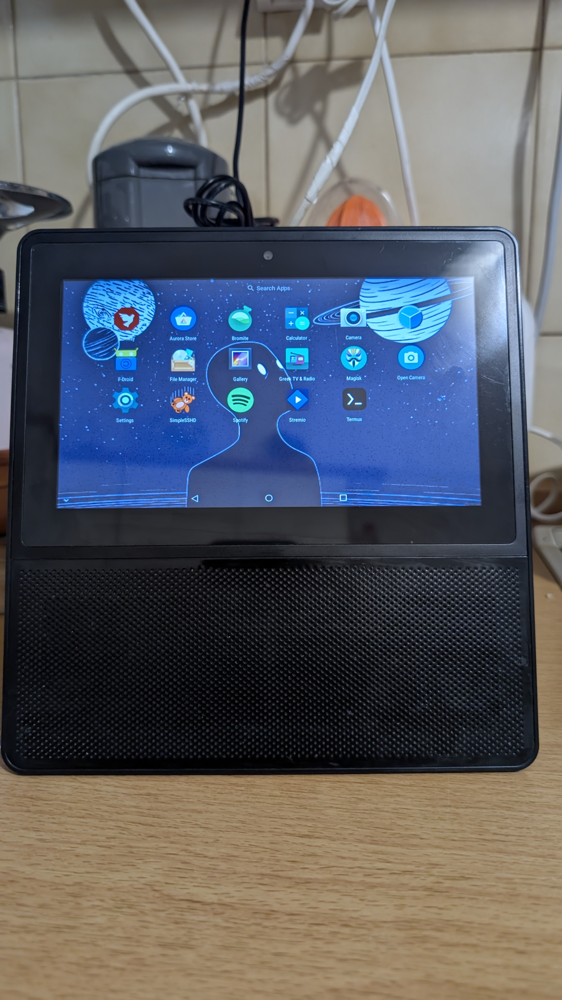
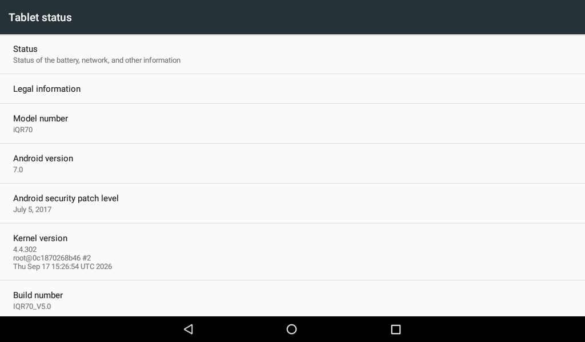
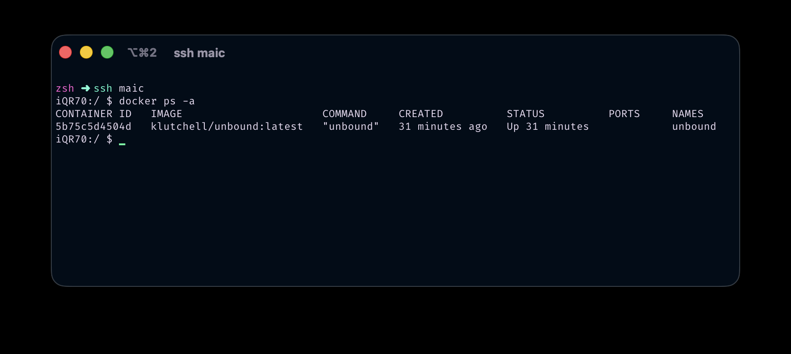

A discontinued Greek smart display, a frozen Android 7 vendor kernel, and everything it took to make boot flashing reversible so I could actually experiment. Root, drivers written and reverse-engineered, WireGuard, unbound, and two builds that refused to boot.
I have unfinished business with the MLS MAIC.
It is a small smart display from MLS Innovation, a Greek electronics company that no longer exists. Android 7, a Greek voice assistant behind glass, no updates, no published kernel source, no Google services. Years ago I found the way out of its kiosk and posted it on XDA, so people could reach the Android underneath. Mine has been the little TV I keep on while I cook ever since. Escaping the kiosk was always step one of a longer project I never finished. This is me finishing it.

The kitchen TV in question, app drawer open. Magisk, SimpleSSHD, Termux, Greek TV and Radio and the rest, on hardware its maker walked away from.Fair warning, this is the long technical version. The short one is the repo: https://github.com/milouk/mls-maic
Temp root comes from MediaTek's mtk-su, Diplomatic's privilege-escalation exploit. It grants root over plain wireless ADB, no A-to-A cable, no BROM:
adb shell '/data/local/tmp/mtk-su64 -c /system/bin/sh -c "id"'
# → uid=0(root) gid=0(root) ...
That one property matters more than it looks. Everything risky I did later leaned on the fact that I could always get root back over Wi-Fi, whatever state the device was in.
Root became permanent with a Magisk-patched boot on mmcblk0p9. The snag is that this legacy boot depends on the skip_initramfs to want_initramfs patch, and Magisk removed it in later versions. So there is a ceiling, and it is 25.2. I do not trust that from a changelog, I verify it against the actual image before flashing:
# both daemon binaries actually embedded and byte-identical to source
magiskboot cpio ramdisk.cpio "exists overlay.d/sbin/magisk64.xz"
# kernel patch actually applied
magiskboot hexpatch kernel 736B69705F696E697472616D6673 ...
# ^ this should find NOTHING. skip_initramfs must be gone. If it patches, STOP.
Get it wrong and the device still boots, but su is a dead symlink to a zero-byte file. Ask me how I know.
Every HTTPS stream was failing. The error looked like a bad certificate. It was not:
javax.net.ssl.SSLHandshakeException
Caused by: java.security.cert.CertificateException
Caused by: java.lang.NullPointerException:
...getSubjectX500Principal() on a null object reference
at android.security.net.config.DirectoryCertificateSource.findCerts
Android builds its trust store by walking every file in the cacerts directory. If a single file there cannot be read or parsed, the whole walk returns null and TLS dies for the entire app, even for sites whose CA is perfectly fine. The ROM had never shipped Let's Encrypt's roots, and a stray file with wrong permissions took down the rest. The fix injects the ISRG roots on boot and enforces 0644 root:root with the correct SELinux context on all 150 certs, every boot.
There was no notification shade because MLS had set status_bar_height to 0dp in framework-res.apk. SystemUI was drawing the status bar window at zero pixels tall. Patching it to 24dp changes exactly one byte of resources.arsc, then re-signing with the AOSP platform key (the key that actually signed this ROM) so PackageManager still accepts it. Shipped as a Magisk module that replaces an existing file, never one that adds files, which matters for reasons the cacerts trap already taught me.
The stock 4.4.22 was a dead end, so I rebuilt from the vendor base. The first four days were a black screen, and the answer was the compiler. A GCC 7.5 build died before the first initcall (/proc/aed/reboot-reason showed last init function 0x0). Only a GCC 4.9 build, the toolchain the stock kernel was built with, actually boots this tree. The whole build lives in Docker so the toolchain is reproducible and never rots. And there is no UART on this board, no serial header to solder to, so all four of those days were debugged blind, through pstore and the MediaTek reboot-reason record, never a live log.

The payoff, in Android's own Settings. Kernel 4.4.302 on an iQR70 running Android 7, built by hand.A vendor kernel is not really "source you compile." It is a minefield of board-specific assumptions, and building your own detonates every mine the stock build happened to tiptoe around. Some of this was writing new code, a __setup handler here, a 5 KB freestanding recovery binary there. Most of it was reverse-engineering: decompiling the stock drivers, diffing symbol sizes against the stock binary byte for byte, and working out what mine were doing that theirs quietly was not. Almost every fix is one or two tokens, which is exactly what makes driver work equal parts thrilling and humiliating.
The screen would render correctly and then go green a split second later. To prove the hardware path was fine I turned on CONFIG_VT and FRAMEBUFFER_CONSOLE, and the kernel drew the Tux logo at framebuffer registration with no userspace involved, then went green anyway. So a known-good configuration was being torn down very early, in kernel context.
The kernel held zero clock references on the display blocks. MTK_NO_DISP_IN_LK is undefined, so dpmgr_path_start() runs only in decouple mode and is skipped in DIRECT_LINK. dpmgr_path_init() is commented out. disp_probe does devm_clk_get and never clk_prepare_enable, so path_top_clock_on() is never reached. The display ran entirely on the bootloader's programming, with the kernel holding no references to OVL, RDMA, COLOR, DPI0 or SMI. Then two adjacent late_initcalls pulled the rug out. mtk_smi_init_late()'s pm_runtime_put_sync collapsed the whole DISP power domain, and clk_disable_unused() switched off the gates about 291 microseconds later. The fix pins both:
clk_ignore_unused smi_keep_disp
clk_ignore_unused is generic. smi_keep_disp is a __setup() I added, because the genpd teardown fires earlier and has no generic escape. The honest reframe: stock probably loses the bootloader image too and SurfaceFlinger repairs it within a frame. I was booting the recovery slot, where nothing performs that repair, so the green screen may never have been a regression at all.
Dead touchscreen, Failed to init chip!. The driver halts the controller's internal DSP by writing 0x88 to register 0xE0, and the chip NAKs that write on purpose, because it is stopping its own I2C block. Our revision folded that expected -ENXIO into the return value:
write_buf[0] = 0x88;
/* Register 0xE0 = 0x88 halts the GSL's internal DSP, and the chip NAKs this
* write as it stops its own I2C block. Deliberately NOT accumulated into ret. */
gsl_i2c_write_bytes(client, 0xe0, &write_buf[0], 1); /* was: ret = ... */
So reset_chip() returned negative, init_chip() aborted, tpd_registration() bailed, and request_irq() and the touch event thread never ran. The chip was healthy the entire time. All 15,213 firmware writes succeeded and check_mem_data read 0xb0 == 5a5a5a5a. A decompile of stock's probe explained why stock never cared: it discards the return value and retries. A second bug hid behind the first, request_irq passed IRQF_TRIGGER_RISING where the DT declares falling, and a trigger flag in request_irq overrides the DT type, so ours won and was wrong. It stayed invisible for days because GSL_DEBUG is 0 in this tree, so only the error macro compiled in and every log looked like total failure.
CONFIG_ARCH_MTK_PROJECT=tb8167p3_64 -> findstring tb8167p -> -DDEMO_BOARD_SUPPORT=1
That single findstring forced the legacy-GPIO branch of kd_camera_hw.c, whose mtkcam_gpio_init() is an empty stub and whose mtkcam_gpio_set() drives cam0_rst and cam0_pdn through GPIO numbers the DT does not provide. Both resolve to -2, gpio_direction_output returns -EINVAL, reset is never asserted, and no sensor can leave reset. Stock builds the DEMO_BOARD_SUPPORT==0 branch, which uses the eleven pinctrl states the identical DT already defines. I verified by symbol size, not by hope: mtkcam_gpio_init went from 8 bytes to 408, exactly stock's size, and stock-only strings like Cannot find camera pinctrl appeared in the image. The sensor itself only captures once the GC5024 MIPI settle count is bumped from 14 to 85, otherwise SENINF times out having read 2452 of 2592 pixels per line.
Two problems. First, the 2ND EXT Codec dai_link had .codec_name = "snd-soc-dummy", so ad82584f_init, the reset and the 134-register init sequence and the final unmute, never ran. Stock binds ad82584f.1-0031. One line. Second, and nastier, the 4.4 AFE path did a plain memset() on the DL1 SRAM buffer, which is MMIO. On arm64 memset uses the DC ZVA cache-zeroing instruction, which faults on device memory. Swapping it for memset_io() is what actually let the amp come up cleanly.
The device's GPU userspace and firmware are DDK 1.8@4490469. My tree only shipped up to m1.8ED4333936, so the kernel-mode driver was older than the userspace calling into it, the dangerous direction, because the PowerVR bridge is unversioned across revisions and an older driver can be missing entry points or disagree on struct layouts. The matching revision turned out to be public in the Acer Iconia B3-A40 tree, also MT8167 on Android 7 and 4.4, and 365 files dropped straight in. The trap was that gpu_rgx/Makefile's version selector is a no-op ifeq with both branches hardcoding the same path, so the directory name is the only thing that actually chooses a revision.
sym827, nau8540, stk8baxx and mc3433 were all absent from the stock binary and observably failing to probe, so out they came and the image lost 200 KB. sym827 was not merely unnecessary, it was actively dangerous. The DT marks it regulator-always-on for vproc, so a failing driver is worse than none. It has a latent regulator_unregister(ERR_PTR) panic in PID 1. And it gpio_requests pin 34, which is a live DPI data line, with no gpio_free on any path, while MediaTek's pinctrl physically re-muxes that pin to GPIO mode. Vproc is really fed by the MT6392 PMIC anyway. As a bonus horror, stk8baxx calls sys_fchmodat() to make its raw I2C sysfs nodes world-writable.
A full-boot audit at loglevel=5, chosen because console_loglevel gates what reaches pstore before the per-console loop and so acts as a single capture-volume knob, turned up 68 distinct error shapes. Exactly two were mine, the deliberate touch NAK and some accelerometer-core noise. Both fixed. The other 66 are stock's, and stock ships anyway. That number is what told me the bring-up was done.
At one point the device bootlooped and the log blamed SELinux:
init: SELinux: Could not open sepolicy: No such file or directory
init: failed to load policy: No such file or directory
init: Security failure, rebooting into recovery mode...
The log was wrong. The real cause was DRAM placement. A boot or recovery ramdisk on this device must stay under exactly 4,194,304 bytes compressed, because LK copies each blob to a fixed address and the DTB puts the diagnostic region immediately above it:
ram_console-reserved-memory@44400000 0x44400000
budget = 0x44400000 - 0x44000000 = 4 MiB
Go over and ramoops_init (a postcore_initcall) zaps those zones before populate_rootfs (a rootfs_initcall) ever decompresses the initramfs living there. gzip is a stream, so corruption near the end destroys the tail of the cpio, /sepolicy sits about 95 percent in, it vanishes, and init reboots into the same broken image. mkboot.py now reads the ceiling from the DTB node names and refuses to pack anything over it.
Here is the piece that made everything else possible. Flashing p9 used to be a one-way door. A kernel that boots but never reaches usable Android leaves no way back in. So before any risky flash, a tiny freestanding binary in the recovery ramdisk restores a known-good image from /data, and it validates before it ever writes:
DO_RESTORE trigger: it does nothing at all, a normal recovery boot is untouched.ANDROID! magic: refused, that is not a boot image.RECOVERY and not ROOTFS: refused, that is a recovery image, not a boot one.It opens the boot partition for writing only after every check passes, writes, fsyncs, reads back, compares a checksum, and always exits 0 so init never treats it as failed. Verified in anger:
maic_rescue: image validated; writing boot partition
maic_rescue: SUCCESS: boot partition restored and verified
Why freestanding C and not a script? Stock recovery has no shell, and Magisk's 1.7 MB static busybox does not fit under that 4 MiB ceiling. A raw-syscall binary costs 5 KB.
With a working rescue I stopped being scared of the boot partition, and that is the whole trick. The shipping kernel (maic-4.4.302) gained:
aes pmull sha1 sha2 in /proc/cpuinfo), so enabling the CE drivers was a real config-only win.ln -sfT "$WG/src" "$K/net/wireguard"
sed -i "/CONFIG_NETFILTER.*+=/a obj-\$(CONFIG_WIREGUARD) += wireguard/" "$K/net/Makefile"
sed -i "/^if INET\$/a source \"net/wireguard/Kconfig\"" "$K/net/Kconfig"
This kernel has no loadable-module support, so it builds in as =y. 116 wg_ symbols end up in the image, and ip link add wg0 type wireguard just works.
/run. The rootfs is read-only and non-remountable and /run does not exist, and dockerd 25.x hardcodes /run/docker/plugins, so I give it a writable /run inside its own private mount namespace where the real system never sees it:unshare -m sh -c '
busybox mount -o remount,rw /
mkdir -p /run
busybox mount -o remount,ro /
mount -t tmpfs tmpfs /run
... exec dockerd
'
The first thing I put in a container was unbound, a full recursive DNS resolver, so the tablet answers its own lookups from the root servers down instead of trusting whatever DNS the network hands it. WireGuard is the headline act, the reason the kernel work was worth it, but a private recursive resolver humming along next to it on a 2 GB kitchen display is the kind of absurd that makes me grin every time I remember it is running.

Real Docker on Android 7, seen over SSH from my Mac.docker ps shows the unbound recursive resolver up.
Not everything worked. Two hardening builds turned on DEBUG_RODATA and software PAN, and they would not boot at all:
< # CONFIG_ARM64_SW_TTBR0_PAN is not set
> CONFIG_ARM64_SW_TTBR0_PAN=y
< # CONFIG_DEBUG_RODATA is not set
> CONFIG_DEBUG_RODATA=y
The A35 is ARMv8.0, so hardware PAN is a no-op and software PAN becomes the real enforcement. MediaTek's vendor drivers dereference user pointers directly, so it faults in early boot. On most projects that is a dead device. Here the rescue caught it twice and restored stock on its own. The shipping kernel keeps the crypto and the CVE fixes and drops those two options. I never touched a cable, and the kitchen never noticed.
A discontinued smart display, first pried open years ago on XDA, is now a rooted and hardened tablet that streams TV, terminates a WireGuard tunnel, resolves its own DNS through unbound, and runs Docker containers, all on a frozen vendor kernel I dragged forward by hand, driver by driver.
And here is the part I am quietly smug about. Not one cable was involved in any of it. Rooting, every kernel flash, both rescues, all of it happened over Wi-Fi from a terminal on my Mac. No UART, no USB, no BROM. The device never once left the kitchen counter.
None of it was necessary. That is exactly why it was worth doing.
Everything is here: https://github.com/milouk/mls-maic